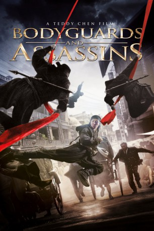
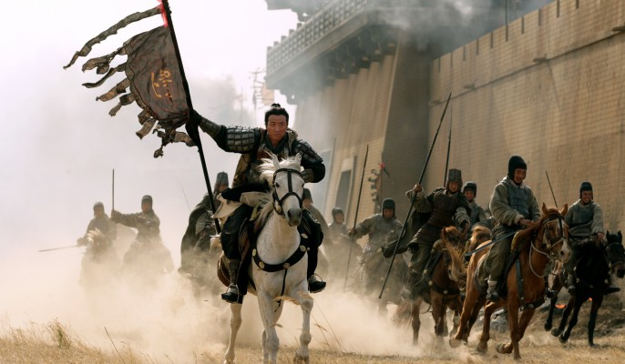

#2921 Bodyguards & Assassins
Alternativ: Bodyguards and Assassins (Englischer Titel)
 
 IMDB-Wertung: 6.8 / 10
IMDB-Wertung: 6.8 / 10  Metascore: 0
Metascore: 0 
Im China des frühen 20. Jahrhunderts steht die Regentschaft der letzten Kaiserin auf tönernen Füßen, sowohl konservativ-patriotische als auch sozialistische Reformbewegungen streben nach Demokratie und Autonomie von Kolonialmacht England. Unabhängig von ihren unterschiedlichen Zielen setzen die Revolutionäre auf die bevorstehende Rückkehr des exilierten Oppositionellen Dr. Sun, doch auch dessen Gegner zeigen sich gut vorbereitet. Um ein Attentat zu verhindern, schmiedet Verleger Li einen ausgeklügelten Schlachtplan.
Jahr: 2009
Dauer: 138 Minuten
FSK: 18
Land: China Studio: Splendid FilmTonspuren: DTS - ,
Untertitel: Deutsch,
Auflösung: 1080p (1920x824) Größe: 11264 MB
Genre: Action, Drama, Geschichte
Regisseur: Teddy Chan
Drehbuch: Junli Guo, Tin Nam Chun, Joyce Chan, Tung Man Chan, James Yuen
Soundtrack: Kwong Wing Chan
Darsteller:
 Xueqi Wang als Li Yue-Tang
Xueqi Wang als Li Yue-Tang Tony Ka Fai Leung als Prof. Chen Xiao-Bai
Tony Ka Fai Leung als Prof. Chen Xiao-Bai-  Jun Hu als Yan Xiao-Guo
 Nicholas Tse als Ah Si
Nicholas Tse als Ah Si Donnie Yen als Sum Chung-Yang
Donnie Yen als Sum Chung-Yang Bingbing Fan als Yuet-yu
Bingbing Fan als Yuet-yu- Yuchun Li als Fang Hong
- Leon Lai als Prince Lau Luk-Yak
 Eric Tsang als Detective Smith
Eric Tsang als Detective Smith Cung Le als Yan Xiao-Guo's henchman #1
Cung Le als Yan Xiao-Guo's henchman #1 Hanyu Zhang als Sun Yat-Sen
Hanyu Zhang als Sun Yat-Sen Simon Yam als General Fang Tian
Simon Yam als General Fang Tian Jacky Cheung als Prof. Yang Quyun
Jacky Cheung als Prof. Yang Quyun- Wenjie Wang als
- Bo-Chieh Wang als Li Chung-Guang
- Mengke Bateer als Wang Fu-Ming, Stinky Tofu
- Seung Dik als Police chief
- Yu-Lam Fan als
- Hao Jing als Nianci
- Edmond Wong Kin-Yip als Shot policeman
- Miao Liang als
 Zhong Lü als Sun Yat-Sen's mother
Zhong Lü als Sun Yat-Sen's mother- Gary Wing-Lun Mak als Casino dealer
- Philip Ng als Qing assassin
- Michelle Reis als Prince Lau's lover
- John Sham als Ah Suen's father
 Yu-Hang To als Qing assassin
Yu-Hang To als Qing assassin- Yachao Wang als Bao Shi
- Jack Wai-Leung Wong als Shot policeman
- Wei Yi-Bo als Yong Kai
 Xing Yu als Qing assassin
Xing Yu als Qing assassin- Jianya Zhang als Boss Feng
- You Zhang als
- Yun Zhou als Ah Suen
Datei: X:\FSK18-2000-2009\Bodyguards & Assassins (2009, FSK18, 1920x824).mkv seit 31.12.2015
Festplatte: FSK18
 Es gibt insgesamt 106 Filme in der Gruppe 'FSK18-2000-2009'
Es gibt insgesamt 106 Filme in der Gruppe 'FSK18-2000-2009'